| 事前事後データの分析について1 |
| 事前事後データの分析について1 |
統制群なし：新たな処置を受ける群の処置前後の比較
統制群あり：処置の効果をすでに知られている群と新たな処置を受ける群と比較
同一の実験ユニットについて2回の測定が行われている
処置の前と後で測定が行われている
2回の測定の間には一定の時間間隔がある
集団間差（こちらが本書のテーマ）
個人の変化
事前事後データでは，事後値は事前値にある程度依存していることが想定されており，分析にはこのことを考慮する必要がある。
事後値だけを群間で比較するのは事前事後デザインにおいては危険。 なぜなら，ベースラインとして群が比較可能であるという保証がないから。
被験者の個人差を統制するために，無作為化の前に測定しておいた個々の被験者の反応を用いる方法が挙げられる。
Cohen(1988)による，対応のあるデータの効果量
| 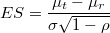 | (2) |
ただし，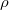は同一被験者について得られた測定値間の相関係数（再検査信頼性2）。
事前値と事後値の散布図
各被験者の事前値と事後値を線で結んだもの。
事前値と事後値の散布図に回帰直線を引き，さらに周辺分布を箱ヒゲ図で表現
事前事後データの分析法
事後値のみを利用したANOVA
差得点を利用したANOVA
percent change（事前から事後への変化率）を利用したANOVA
ANCOVA
初期値によるブロッキング（層化）
変化を査定するために満たされているべき条件
真値と呼ばれる一定期間一定のまま安定した特定の特性や特徴を被験者が有していること
各測定において生じる誤差はランダムなもので，系統的な誤差が生じないこと
観測値は真値と誤差の和であること
事前測定と事後測定を通じて測定装置が安定していること3
The intensity and direction of the response of any function of the organism at the moment of stimulus depends to a great extent on the initial value (level) of the function at the moment of stimulation.
Sir Francis Galton(1885)によって報告されたのが始まり。 Furby(1973), Nesselroade, Stigler, and Baltes(1980), Labouvie(1982)による総括的なレビュー
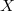を事前値，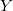を事後値とすると，どのような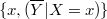についても
| 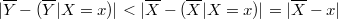 | (3) |
が成り立つ。 事前値と差得点の散布図を描くと明らかに右下がりの形状を示し，両者が負の相関関係にあることがわかる。 つまり，事前値が平均より低かった個体は正の変化を，事前値が平均より高かった個体は負の変化を示す傾向にあるということ。
平均への回帰は，被験者に共通する何らかの生物的・物理的特徴から生じるのではなく，単に条件付き期待値に関する統計的性質によるものである。
事前値が平均から離れていればいるほど，平均への回帰は大きい。しかも，この現象は処置の効果とは無関係に生じる。 特に，ベースラインがある値よりも高いヒトや低いヒトが被験者として集められていると平均への回帰は重大である。
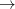 平均への回帰を統制するための群が必要
既知の再検査信頼性の値を利用して，平均への回帰によって生じると期待される改善率を提案4
| 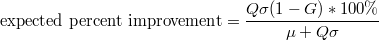 | (4) |
ただし，は平均からの隔たりをSDを単位として表したもの，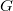は再検査信頼性である。
[証明（※原典は未確認）]
もし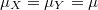かつであれば，
| 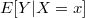 | 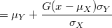 | (5) | ||
 |
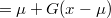 | (6) |
ここで，が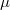から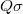ぶん離れているとすると（つまり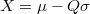），
![$\displaystyle E[Y|X=\mu -Q \sigma ] $](images/img-0020.png) |
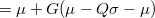 | (7) | ||
|
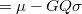 | (8) | ||
| 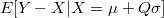 | 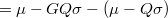 | (9) | ||
|
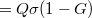 | (10) |
従って，
| 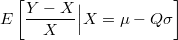 | 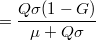 | (11) |
平均への回帰を防いだり調整したりするための様々な測定を用いることができる。
単一の測定値ではなく，ベースラインとして複数の測定値の平均を用いることで信頼性を上げるとよい。
複数の測定の平均を用いることの2つのメリット(Shepard, 1981)
平均への回帰を小さくできる
測定値間の精度を高めることができる
研究によっては，極端な事前値の被験者を対象として組み入れる場合がある。 繰り返し測定は非常にコストがかかるという問題がある。 1回か2回の測定を行った時点でそうした被験者を検出する方法があれば有用である。
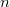回の測定における再検査信頼性をとする。 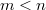において，
![$\displaystyle p(e_1 \leq \overline{X}_ n \leq e_2 | \overline{X}_ m) = \Phi _ Z \left[ \frac{e_2-\mu _ p}{\sqrt {v_ p}} \right] - \Phi _ Z \left[ \frac{e_1-\mu _ p}{\sqrt {v_ p}} \right] $](images/img-0030.png) |
(12) |
ただし，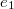と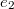は研究に組み入れる上限と下限で，
| 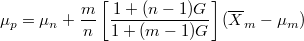 | (13) | ||
| 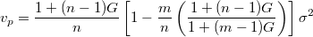 | (14) |
である。
事前値によって研究に組みれられる被験者が決まる場合にすべきこと
1回の測定値ではなく，複数の測定値の平均を用いる
事前値にもとづいて被験者が選ばれたのであれば，変化の評価を2回目の事前値を用いて行う（1回目の事前値と事後値の相関，2回目の事前値と事後値の相関が等しければ，平均への回帰は生じない5）同様に，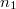回の事前値をスクリーニングに，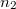回の事前値を変化の評価に用いるという拡張も考えられる
何らかの要因を用いて事後値を補正し，補正した事後値を用いて統計分析を行う。
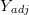を調整後の事後値，を事前値の平均とすると，
| 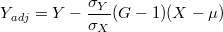 | (15) |
修正値と修正無し値はかなり相関が高い
修正値と修正無し値はともに平均は等しいが，分散は修正値の方が大きい
平均への回帰について詳細はLin and Hughes (1997)に詳しい。
ANCOVAを用いることでも，平均への回帰を事後的に修正できる（第5章）。
以降の前提：事前値は事後値に影響を及ぼすが，処置効果には影響を及ぼさない（必ずしも成り立っているとは限らないが）。 すなわち，モデルは，
| 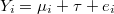 | (16) | ||
| 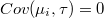 | (17) |
事前値が処置効果に影響を及ぼすことを，“the pretest has sensitized subjects to the treatment"と表現する。
| 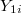 |  |
(18) | ||
| 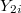 | 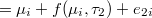 | (19) | ||
|
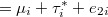 | (20) |
Pretest sensitizationのモデル
| 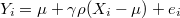 | (21) |
ただし，は事前値の平均， は処置効果に比例する要因であり，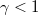のとき処置効果は初期値に関係する6。
は処置効果に比例する要因であり，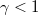のとき処置効果は初期値に関係する6。
を事前測定の回数，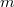を事前測定の回数として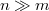のとき7
| 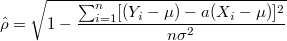 | (22) | ||
| 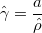 | (23) | ||
| 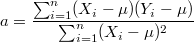 | (24) |
Pretest sensitizationを予防する最も良い方法は，事前テストと事後テストの間の交互作用をisolateできる実験デザインを適用すること（実験に先だってpretest sensitizationを防ぐということ）。
Administer |
pretest |
||
No |
Yes |
||
Administer |
No |
Group1 |
Group2 |
Treatment |
Yes |
Group3 |
Group4 |
交互作用が有意であればpretest sensitizationがあったとする。
主効果は，他のあらゆる変数の全ての水準における予測変数の一定の効果を査定するもの。交互作用が存在するということは，一定の効果ではなく，その効果が事前テストの特定の水準に依存するということ。すべての水準を平均化した主効果にはあまり意味がない。仮に交互作用が存在する場合，要因Aの全ての水準における要因Bの効果と要因Bの全ての水準における要因Aの効果を調べる必要がある。
主効果は，独立変数の効果を全ての水準について平均したものであるとして解釈可能である。第3の変数によって独立変数の従属変数に対する効果が変わることを調整（moderation）という(Jaccard, 1997)。何が独立変数で何が調整変数か分析者が決定する必要がある。事前・事後デザインでは，処置が独立変数で事前値が調整変数。交互作用が存在する場合，調整変数の各水準における独立変数の効果を調べれば十分。
差得点も変化率も事前値と事後値を1つの値にまとめる働きを持っている。
を事前値，を事後値として，差得点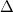は
| 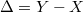 | (25) |
正規性の前提が満たされない場合の代替法としてのノンパラメトリックな検定
のとき
 のとき
のとき
Wilcoxon signed-rank test (Wilcoxon rank sum test)
変換後の得点と変換前の得点は独立であることが望ましい(Kaiser, 1989)。 差得点は，それを構成する得点と独立でなくしばしば事前値と相関しているとして批判の対象になる8。 事前値と差得点の相関は，
| (26) | ||||
|
(27) |
となる(Ghiselli, Campbell, and Zeddeck, 1981)。
事前値と差得点が相関しているということは，差得点を従属変数とし事前値を共変量としたANCOVAを行う価値があるということ。
事前値と差得点が相関しているので，差得点は平均への回帰の影響を受けることになる。
式(15)による平均への回帰の修正が事後値の代わりに適用されることになる。
事前値にもとづいて被験者が選ばれており，が既知である場合の検定への修正
| (28) |
として，と固定して
 |
(29) |
を考える9。 つまり，とは再テスト信頼性を傾きとして切片をとした線形回帰の関係になっている。 事前値のSDと事後値のSDが等しいとすると，検定統計量は
| (30) |
で，自由度はである。
[本方法の弱点]
線形モデルが正しくなく，あるいは正規性の前提が成り立っていないと正しい検定にならない。
被験者によって効果の大きさが異なることに対してこの検定は敏感である。
が既知である必要がある。
Mee and Chua (1991)は，これらの問題に対していくつかの解決案を提示している。
Mee and Chua (1991)の方法に対して，が未知の場合の最尤法にもとづくアプローチを提案。 一定の条件下で，Georgeらの方法はMeeらの方法より高い検定力を示すことがモンテカルロシミュレーションによって示されている。
| (31) | ||||
| (32) |
変化率の最大の弱点は，正規分布に従うということがしばしば満たされないということ。
の期待値を1次のテイラー級数展開で表すと
| (33) |
また，変化率については
| (34) | |||
| (35) |
である。
change scoresも事前値としばしば高い相関を持つので，差得点の分析と同様の困難が生じる。
差得点と事前値との相関は，percent changeと事前値との相関に等しい10。
change scoresの分析は，差得点の分析が有している全ての問題に加え，独自の問題も有する。
事後テスト得点のモデルを
| (36) |
とする。 relative change scoresの平均への回帰は以下のように補正できる(Chuang-Stein (1993)も参照)。
| (37) |
差得点と変化率のいずれを分析対象とするか，いくつかの基準で決定することが考えられる。
いずれの変数が読者にとってより理解しやすいか
いずれの変数が平均への回帰の影響をより強く受けるか
事前値との相関がより弱い変数を分析に使うべきである。 いずれの変数を分析に用いるべきか統計的な基準（尤度比の形になっている）を提案。
| (38) |
ただし，はグループ数，は各グループの人数。
| (39) |
ただし，この基準のみを用いて変数選択を行うべきではない。
平均への回帰が問題になる場合，ANCOVAが有力な選択肢となる。
ANCOVAを用いる際には，事前値と事後値が同じ尺度で測られている必要がない。 必要なのは，事前値と事後値がある程度相関しているということだけ。
| (42) |
事前・事後デザインの場合，
| (43) |
である(Crager, 1987)。はそれぞれ被験者間／被験者内分散。
完全無作為デザイン
| (44) |
と比べると，誤差項を
事後値の事前値に対する回帰によるもの
説明できない残差のばらつきによるもの
の2つに分解していることがわかる。
ANCOVAを用いた2段階の分析
ANCOVAを用いて事後値を修正する
| (45) |
修正した事後値に対してANOVAを適用する
差得点を従属変数にしたANCOVAと事後値を従属変数にしたANCOVAでは，効果の推定は同じになる(Laird, 1983)。
変化率を従属変数としたANCOVAでは，独立変数との関係性が2次関数的になる(Suisa, Levinton, and Esdaile, 1989)。
誤差は独立かつ平均がゼロ，分散共通の正規分布に従う
グループ内回帰係数は母集団において等しい
事前値は誤差なしに測定されている
事前値と事後値に曲線的な関係があれば，それは線形モデルにおいて反影される
誤差のない測定値は存在しない。 独立変数に誤差を導入する。
 |
(46) |
このとき，
| (47) |
である11。
IRWLS(iteratively reweighted least-squares)を用いた母数推定
全ての観測値に対する重み関数を選択する
全ての観測値に対する重みの初期値を得る
重みの初期値を用いて重みつき最小2乗法を実行する
残差を得る
残差を用いて重みを更新する
収束するまでStep3に戻って繰り返す
重み関数として，Huber functionとbisquare functionが知られている(Seber, 1977)。 外れ値の割合が大きい場合（10%を超える）はbisquare functionが優れているが，そうでない場合はパフォーマンスにほとんど違いはない(Birch and Myers, 1982)。
無作為でない割り付けは，妥当なだけでなく無作為割り付けよりも有利な点がある(Dalton and Overall, 1977)。
事前値の情報をもとにした無作為でないシステマティックな割り付け法としてalternate ranks design(ARD)が知られている。 事前値と処遇との間の相関を取り除く形で被験者を割り付ける。
事前値を統制するために，処遇グループに割り付ける前に被験者をブロックに割り付ける
事後値を得てから被験者をブロックに割り付け，post-hoc blocksを統計分析の要因として用いる
事前・事後デザインにおけるブロック数を決めるための表を提供（Table6.1 at p.114）。
全体のサンプルサイズ
事前テストと事後テストの間の相関
グループの数
の3つの情報が必要。 また，
事前値と事後値の間の傾きはどの群でも同じ（ANCOVAと似ている）
群間の等分散性12
という条件が前提とされている。 ロバストネスについては未検討。
ANCOVAとブロッキング，差得点の分析の検定力を比較。 どの方法が検定力が最高かは事前と事後の相関の強さに依存する。
：事後値のANOVAが検定力最高
：ブロッキングが検定力最高
：ブロッキングもANCOVAも検定力は同じくらい
：ANCOVAが検定力最高
差得点の分析は事前事後の相関に関わらず最も検定力が低い。 ANCOVAの方が制約が多く，また教育・心理においてはになることは考えにくいとして，Feldt(1958)はブロッキングを推奨。
詳しくはDiggle, Liang, and Zeger (1995), Nesselroade, Stigler, and Baltes (1980), McDonald, Mazzuca, and McCabe (1983)などを参照。 複数の測定に伴う確率的な性質を考慮に入れる必要がある。
共分散分析を伴った線形混合モデル
| (48) |
 が事前値と事後値の非独立性を表す部分。 Wolfinger(1997)によい適用例。
が事前値と事後値の非独立性を表す部分。 Wolfinger(1997)によい適用例。
Footnotes
| 事前事後データの分析について1 |